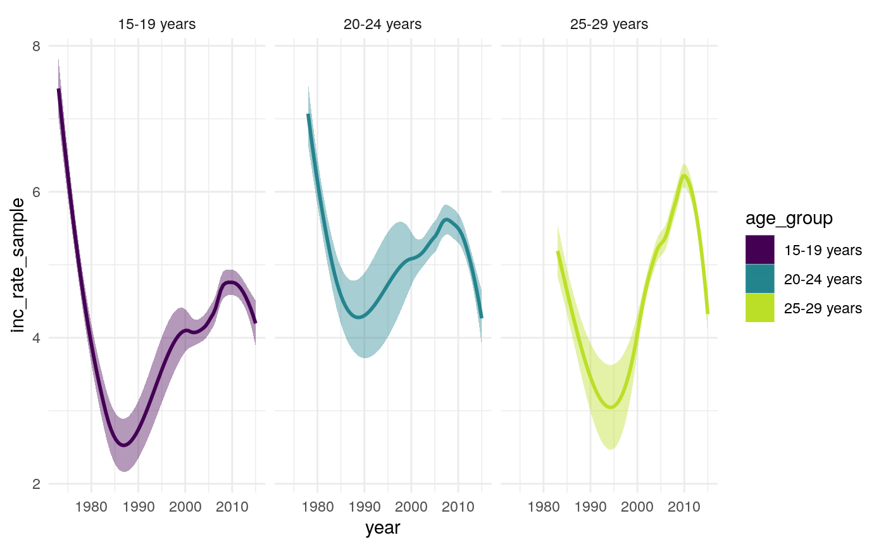

R/sample_annual_decrease_inc_rates.R
sample_annual_decrease_inc_rates.RdThis function samples the percentage annual decrease, using Sutherland et al's estimates for
White UK born incidence rates and estimates of UK born incidence rates in England calculated using the Enhanced Tuberculosis
surveilliance system and the Labour Force Survey. Incidence rates are first sampled from the estimated UK born incidence rates,
by assuming that they are normally distributed. Incidence rates are then sampled from the Sutherland et al. estimates from 1973, 1978, and 1983
using sample_incidence_rates. Average incidence rates for all cases are then estimated using Sutherland
et al.'s population weights for those BCG vaccinated (75
incidence rates are then estimated using a loess fit for each sample, with samples predicted to have an incidence rate below 0.1 per 100,000
having this set to be 0.1 per 100,000. The percentage annual difference is the calculated for each sample
using sample_per_decrease. Projected annual percentage changes are estimated using an average of
the previous 3 years. Similarly for years prior to Sutherland et als incidence rate estimates an average of the previous 3 years are used.
Samples of the percentage annual decrease are returned as a tibble, containing the nested dataframe and a nested matrix ready to be used by
sutherland_model.
sample_annual_decrease_inc_rates(samples = 10, TB_cohorts = c("15-19 years", "20-24 years", "25-29 years"), max_year = 2023, min_year = 1969, years_to_avg = 3, cores = 1, verbose = TRUE)
| samples | Numeric, the number of samples to take. Defaults to 10. |
|---|---|
| TB_cohorts | A character vector indicating the names of the cohorts modelled. Defaults to 15-19 years, 20-24 years, and 25-29 years. |
| max_year | Numeric, set as greater than the maximum year in the dataframe if interested in projection.
Defaults to |
| years_to_avg | Numeric, the number of years over which to average the percentage decrease when estimating the ongoing percentage decrease. |
| verbose | Logical, defaults to |
A nested tibble, containing the sample number, and both a nested dataframe and nested matrix of annual percentage changes.
sample_per_decrease sample_annual_decrease_nots
sample_annual_decrease_inc_rates(samples = 10, cores = 1)#>#> Warning: Removed 750 rows containing non-finite values (stat_binhex).#> Warning: Computation failed in `stat_binhex()`: #> Package `hexbin` required for `stat_binhex`. #> Please install and try again.#> Warning: Computation failed in `stat_binhex()`: #> Package `hexbin` required for `stat_binhex`. #> Please install and try again.#> Warning: Computation failed in `stat_binhex()`: #> Package `hexbin` required for `stat_binhex`. #> Please install and try again.#>#> Warning: Removed 582 rows containing non-finite values (stat_smooth).#> Error in create_cluster(cores = cores): could not find function "create_cluster"